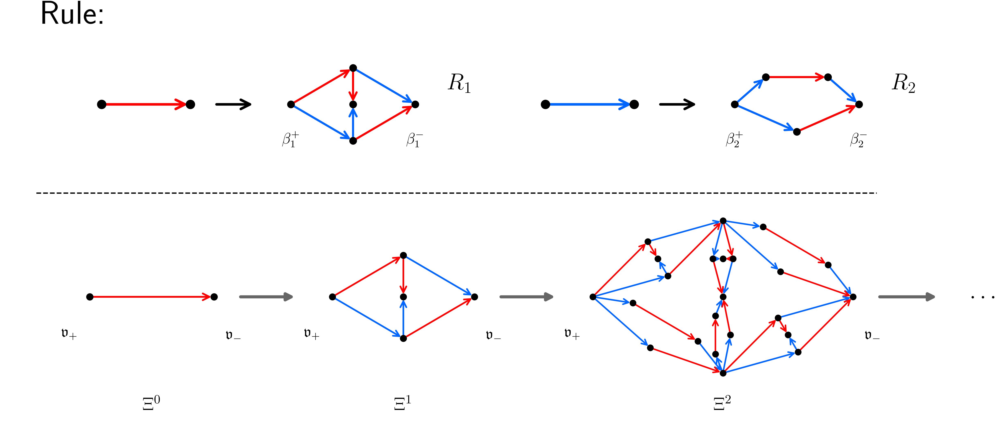
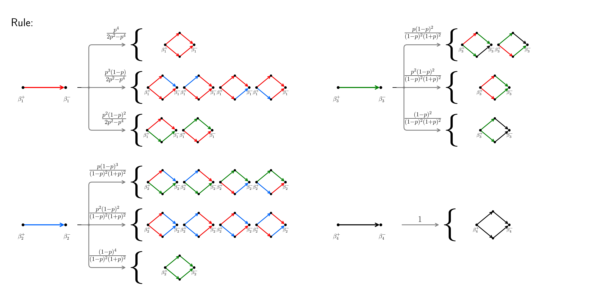
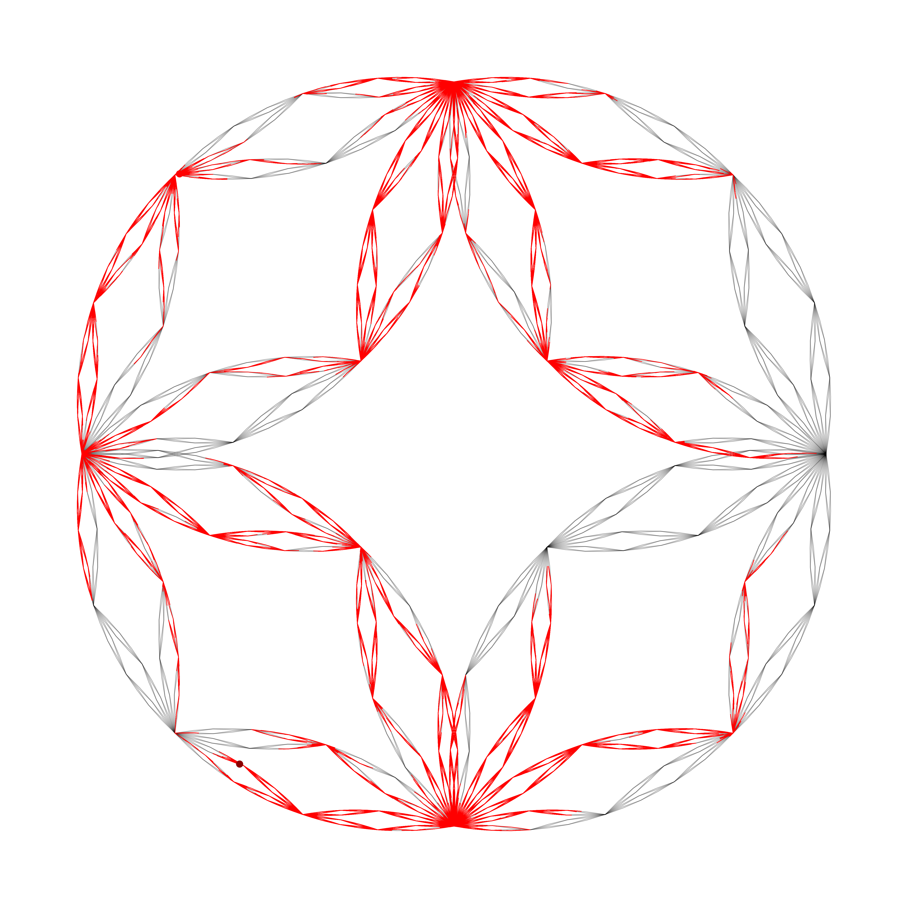
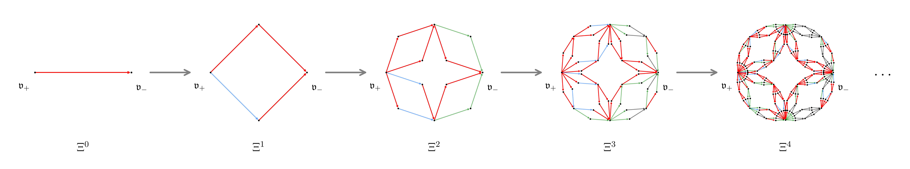

Sections 2–4 (random walk estimates, diffusion limits, percolation results) are formalised in Lean 4, with proofs generated by Harmonic's Aristotle; code released on GitHub.
Abstract
This paper investigates random walks and diffusion limits on a broad class of fractals generated by Edge Iterated Graph Systems (EIGS), a generalisation of hierarchical lattices. We prove that the rescaled simple random walks converge in the Gromov–Hausdorff–Prokhorov–Skorokhod topology to the limiting diffusion, which coincides with Brownian motion when the resistance dimension is positive. The graph analysis underlying this convergence identifies the degree dimension as the natural correction term for on-diagonal heat-kernel estimates, yielding a unified formulation in the locally finite and locally infinite (scale-free) regimes. Using this framework, we solve the open problem on the diamond hierarchical lattice (DHL) percolation cluster posed by Hambly and Kumagai [Commun. Math. Phys. 295 (2010), 29–69]; this suggests that the Alexander–Orbach-type conjecture fails for the natural Brownian motion on the cluster. Sections 2 to 4 have been formalised in Lean.
Problem
Random walks and diffusions on fractals generated by Edge Iterated Graph Systems (EIGS), a generalisation of hierarchical lattices, lacked a unified scaling-limit theory. An open problem of Hambly and Kumagai on the diamond hierarchical lattice (DHL) percolation cluster also remained unresolved.
Approach
Resistance renormalisation maps and mass-growth analysis on the combinatorial limit graph are used to derive exit-time estimates and the walk dimension. The degree dimension is identified as the correction term for on-diagonal heat-kernel estimates, covering both locally finite and scale-free regimes. Rescaled walks are shown to converge in the Gromov–Hausdorff–Prokhorov–Skorokhod topology. Critical DHL percolation is encoded as a four-colour random EIGS. Sections 2–4 are formalised in Lean 4 with proofs produced by Aristotle; for Section 3, Lean checks the implications from stated hypotheses rather than the hypotheses themselves.

Figure 3: An example of two-coloured EIGS

Figure 10: The random EIGS associated with percolation
Results
Rescaled simple random walks converge to a limiting diffusion, which coincides with Brownian motion when the resistance dimension is positive. The Hambly–Kumagai problem on the DHL percolation cluster is solved, suggesting that an Alexander–Orbach-type conjecture fails for the natural Brownian motion on the cluster.

Figure 6: A sample trace of a 10^{5} -step simple random walk on the level-8 approximation \Xi^{8} of DHL, drawn in the symmetric planar embedding used for visualisation. The underlying graph is shown in grey and the trace in red.

Figure 11: A critical percolation cluster (red subgraph) on DHL generated by random EIGS.